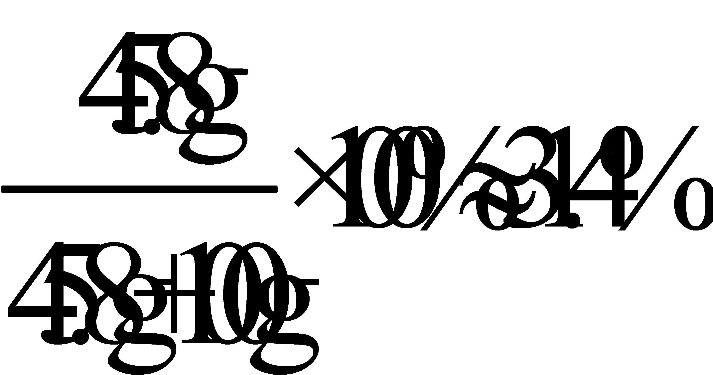

2020年北京市中考化学试题 · 选择题 第6、7、8、9、10题 · 对应解析
6.下列不能与稀盐酸反应的金属是
A. CuB. ZnC. AlD. Mg
【答案】A
【解析】
【详解】由于在这四种金属中，只有铜排在氢后，因此它不能和稀盐酸反应；
故选：A。
7.下列物质含有氧分子的是
A. O2B. H2O2C. H2CO3D. SO2
【答案】A
【解析】
【详解】A、氧气由氧分子构成，含有氧分子，故选项A符合题意；
B、过氧化氢由过氧化氢分子构成，不含有氧分子，故选项B不符合题意；
C、碳酸由碳酸分子构成，不含有氧分子，故选项C不符合题意；
D、二氧化硫由二氧化硫分子构成，不含有氧分子，故选项D不符合题意；
故选：A。
【点睛】解答这类题目，分清楚哪些物质是由分子构成的，物质由什么分子构成。
8.下列物质的用途中，利用其化学性质的是
A. 铜用于制作导线
B. 干冰用作制冷剂
C. 铜用于制作铜火锅
D. 赤铁矿用于炼铁
【答案】D
【解析】
【详解】A、铜用于制作导线是利用铜的导电性，属于物理性质；
B、干冰用于制冷是利用干冰升华吸热，属于物理性质；
C、铜用于制作铜火锅是利用铜的导热性，属于物理性质；
D、赤铁矿用于炼铁，将铁从其化合物中还原出来，需要通过化学反应表现，属于化学性质；
故选：D。
9.氯化钯（PdCl2）可用于检测CO。PdCl2中Pd的化合价为
A. +1B. +2C. +3D. +4
【答案】B
【解析】
【详解】氯元素通常为-1价，设PdCl2中Pd的化合价为x，根据化合物中，正、负化合价的代数和为零，可得：x+（-1）×2=0，x=+2。
故选B。
10.不同温度下KNO3的溶解度如下表所示。下列说法正确的是
温度/℃ | 20 | 30 | 40 |
溶解度/g | 31.6 | 45.8 | 63.9 |
A. 20℃时，100gKNO3饱和溶液中溶质质量为31.6g
B. 30℃时，100gKNO3饱和溶液的溶质质量分数为45.8%
C. 30℃时，将50gKNO3放入100g水中得到150g溶液
D 40℃时，100g水最多溶解63.9gKNO3
40℃时，100g水最多溶解63.9gKNO3
【答案】D
【解析】
【详解】A、20℃时，硝酸钾的溶解度是31.6g，表示20℃时，100g水中溶解31.6gKNO3达到饱和状态，也就是131.6g的KNO3饱和溶液中的溶质质量为31.6g ，故选项A不正确；
B、30℃时，KNO3的溶解度是45.8g，要计算该温度下饱和溶液的溶质质量分数，根据一定温度下，饱和溶液中溶质质量分数与溶解度的关系：得，30℃时，100gKNO3饱和溶液的溶质质量分数=

，故选项B不正确；C、30℃时，KNO3的溶解度是45.8g，表示30℃时，100g水中溶解45.8g KNO3达到饱和状态，也就是30℃时，100g水中最多只能溶解45.8gKNO3，所得饱和溶液的质量是145.8g，故选项C不正确；
D、40℃时，KNO3的溶解度是63.9g，表示40℃时，100g水中溶解63,9g KNO3达到饱和状态，也就是40℃时，100g水中最多只能溶解63.9gKNO3，故选项D正确；
故选：D。
【点睛】解答有关固体溶解度的题目，必须准确理解固体溶解度的定义。